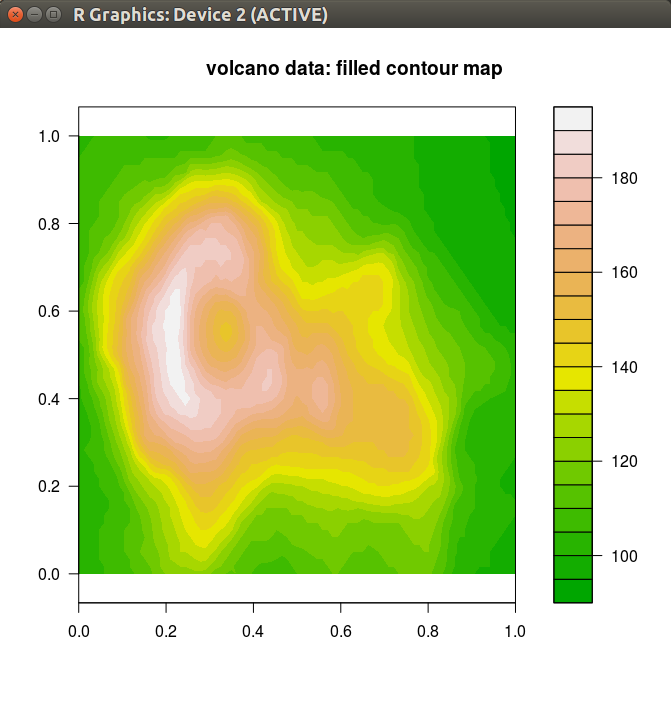

class: huge # Future: Friendly Parallel and Distributed Processing in R for Everyone <img src="imgs/formula_one_pitstop_724x412.gif" alt="Animation: Formula 1 pitstop parallel team work" style="margin-top: 1.6ex; margin-right: 1.6ex; width: 40%; float: right;"/> <span id="author"> <strong>Henrik Bengtsson</strong><br> <div style="line-height: 1.0; margin-top: -1.5ex; font-size: 105%"> Univ of California, San Francisco<br> <div style="line-height: 1.4; margin-top: 2ex; margin-bottom: 2ex;"> <!-- simpleicons.org --> <img src="imgs/twitter.svg" style="width: 2.2ex;margin-bottom: -0.2ex;"> <a href="https://twitter.com/henrikbengtsson">@HenrikBengtsson</a><br> <img src="imgs/github.svg" style="width: 2.2ex; margin-bottom: -0.2ex;"> <a href="https://github.com/HenrikBengtsson/future">HenrikBengtsson/future</a><br> <img src="imgs/rss.svg" style="width: 2.0ex;margin-bottom: -0.2ex;"> <a href="https://jottr.org">jottr.org</a><br> </div> <small> </div> </small> </span> <div style="line-height: 1.5; margin-top: 2ex; font-size: 115%"> <strong>Acknowledgments</strong><br> - <a href="https://losangeles2019.satrdays.org/">SatRday LA 2019</a> - Organizers, Volunteers, and Sponsors<br> - R Core, CRAN, devels, and users!<br> - <a href="https://www.r-consortium.org/projects">R Consortium</a><br> </div> <div class="print-only" style="margin-top: 3ex;"> A 40-minute presentation, SatRday LA 2019, Los Angeles, 2019-04-06 </div> --- layout: false class: HUGE # Why do we parallelize software? Parallel & distributed processing can be used to: 1. **speed up processing** (wall time) 2. **lower memory footprint** (per machine) 3. **avoid data transfers** (compute where data lives) 4. Other reasons, e.g. asynchronous UI/UX <!-- <p class="footnote-small"> Comment: I'll focuses on the first two in this talk. </p> --> --- class: huge code_normal # Concurrency in R ```r X <- list(a = 1:50, b = 51:100, c = 101:150, d = 151:200) ``` ```r y <- list() y$a <- sum(X$a) y$b <- sum(X$b) y$c <- sum(X$c) y$d <- sum(X$d) ``` ```r y <- list() for (name in names(X)) y[[name]] <- sum(X[[name]]) ``` ```r y <- lapply(X, FUN = sum) ``` --- class: huge code_normal # How do we parallelize in base R? <span style="float: right; font-size: 60%;">since R 2.14.0 (Nov 2011)</span> ```r X <- list(a = 1:50, b = 51:100, c = 101:150, d = 151:200) y <- lapply(X, FUN = slow_sum) # 4 minutes ``` This can be parallelized on Unix & macOS (becomes _non-parallel_ on Windows) as: ```r y <- parallel::mclapply(X, FUN = slow_sum, mc.cores = 4) # 1 minute ``` To parallelize also on Windows, we can do: ```r library(parallel) workers <- makeCluster(4) clusterExport(workers, "slow_sum") y <- parLapply(workers, X, fun = slow_sum) # 1 minute ``` --- layout: false class: Huge code_normal # PROBLEM: Different APIs for different parallelization strategies ## Developer * "Which parallel API should I use?" * "What operating systems are users running?" * "It should work ... Oh, I forgot to test on macOS." ## User * "Weird, others say it work for them but for me it doesn't!?" * "I wish this awesome package could parallelize on Windows :(" * "I wish we could use a compute cluster in the cloud to speed this up" --- class: Huge code_normal # PROBLEM: Code clutter + error prone ```r #' @import parallel my_fun <- function(X, ncores = 1) { if (ncores == 1) { y <- lapply(X, FUN = my_sum) } else { if (.Platform$OS.type == "windows") { workers <- makeCluster(ncores) on.exit(stopWorkers(workers)) clusterExport(workers, "slow_sum") y <- parLapply(workers, X, fun = slow_sum) } else { y <- mclapply(X, FUN = my_sum, mc.cores = ncores) } } y } ``` --- class: huge code_normal # SOLUTION: Encapsulate these problems ```r library(foreach) doMC::registerDoMC(4) # User chooses how to parallelize my_fun <- function(X) { foreach(x = X) %dopar% { slow_sum(x) } } ``` ```r workers <- parallel::makeCluster(4) # Alternative parallel backend doParallel::registerDoParallel(workers) ``` <code style="color: #cc0000;">Error in { : task 1 failed - 'could not find function "slow_sum"'</code> Whoops, we forgot to export `slow_sum()` to background sessions; ```r foreach(x = X, .export = "slow_sum") %dopar% { slow_sum(x) } ``` --- count: false layout: false count: false layout: false class: Huge # The Future ... --- count: false layout: false layout: false class: Huge count: false # A Future is ... * A **future** is an abstraction for a **value** that will be **available later** * The value is the **result of an evaluated expression** * The **state of a future** is **unevaluated** or **evaluated** <div style="margin-top: 3ex; font-size: 130%; margin-left: 3ex;"> <div style="float: left;"> Standard R: <pre style="font-size: 130%;"> v <- expr </pre> </div> <div style="float: right; margin-right: 4ex;"> Future API: <pre style="font-size: 130%;"> f <- future(expr) v <- value(f) </pre> </div> </div> --- count: true class: huge count: false # Example: Sum of 1:100 ```r > slow_sum(1:100) # 2 minutes [1] 5050 ``` ```r > a <- slow_sum(1:50) # 1 minute > b <- slow_sum(51:100) # 1 minute > a + b [1] 5050 ``` --- class: huge count: false # Example: Sum of 1:50 and 51:100 in parallel ```r > library(future) > plan(multiprocess) > fa <- future( slow_sum( 1:50 ) ) # ~0 seconds > fb <- future( slow_sum(51:100) ) # ~0 seconds > 1:3 [1] 1 2 3 > value(fa) [1] 1275 > value(fb) [1] 3775 > value(fa) + value(fb) [1] 5050 ``` --- layout: false class: Huge # Two alternative syntaxes <div style="margin-top: 2ex; font-size: 130%; margin-left: 3ex;"> <div style="float: left;"> Standard R: <pre style="font-size: 130%;"> v <- expr </pre> </div> <div style="float: right; margin-right: 4ex;"> Future API (explicit): <pre style="font-size: 130%;"> f <- future(expr) v <- value(f) </pre> </div> </div> <div style="margin-top: 14ex; font-size: 130%; margin-left: 12ex;"> <div style="float: right; margin-right: 6.2ex;"> Future API (implicit): <pre style="font-size: 130%;"> v %<-% expr </pre> </div> </div> --- class: Huge # Example: Sum of 1:50 and 51:100 in parallel <span style="float: right;">(implicit API)</span> ```r > library(future) > plan(multiprocess) > a %<-% slow_sum( 1:50 ) # ~0 seconds > b %<-% slow_sum(51:100) # ~0 seconds > 1:3 [1] 1 2 3 > ``` --- count: false class: Huge # Example: Sum of 1:50 and 51:100 in parallel <span style="float: right;">(implicit API)</span> ```r > library(future) > plan(multiprocess) > a %<-% slow_sum( 1:50 ) # ~0 seconds > b %<-% slow_sum(51:100) # ~0 seconds > 1:3 [1] 1 2 3 > a + b [1] 5050 ``` --- count: false count: false count: false count: false count: false class: Huge # Many ways to resolve futures ```r plan(sequential) plan(multiprocess) plan(cluster, workers = c("n1", "n2", "n3")) plan(cluster, workers = c("remote1.org", "remote2.org")) ... ``` ```r > a %<-% slow_sum( 1:50 ) > b %<-% slow_sum(51:100) > a + b [1] 5050 ``` --- class: Huge # R package: future <span class="badges-small right"><a href="https://cran.r-project.org/package=future"></a><!-- </span> --> * "Write once, run anywhere" * A simple **unified API** ("interface of interfaces") * **100% cross platform** * **Easy to install** (< 0.5 MiB total) * **Very well tested, lots of CPU mileage, production ready** <pre> ╔════════════════════════════════════════════════════════╗ ║ < Future API > ║ ║ ║ ║ future(), value(), %<-%, ... ║ ╠════════════════════════════════════════════════════════╣ ║ future ║ ╠════════════════════════════════╦═══════════╦═══════════╣ ║ parallel ║ globals ║ (listenv) ║ ╠══════════╦══════════╦══════════╬═══════════╬═══════════╝ ║ snow ║ Rmpi ║ nws ║ codetools ║ ╚══════════╩══════════╩══════════╩═══════════╝ </pre> --- class: Huge # Why a Future API? <span style="float: right;">Solution: "interface of interfaces"</span> * The Future API encapsulates heterogeneity <div style="margin-top: -1.5ex;"/> - fever decisions for developer to make - more power to the end user * Motto: **Developer decides what to parallelize** - **user decides how to** * Provides **atomic building blocks**: - `f <- future(expr)`, `v <- value(f)`, ... for richer parallel constructs, e.g. '<a href="https://cran.r-project.org/package=foreach">foreach</a>', '<a href="https://cran.r-project.org/package=future.apply">future.apply</a>', ... * **Automatic support for new backends**,<br> e.g. '<a href="https://cran.r-project.org/package=future.callr">future.callr</a>', '<a href="https://cran.r-project.org/package=future.batchtools">future.batchtools</a>', 'future.clustermq', ... --- class: Huge # Why a Future API? <span style="float: right;">99% Worry Free</span> * **Globals & Packages**: automatically **identified & exported** * **Static-code inspection** by walking the abstract syntax tree (AST) ```r x <- rnorm(n = 100) pryr::ast( { slow_sum(x) } ) f <- future({ slow_sum(x) }) | \- `{ \_____________/ | \- () |_____________| \- `slow_sum | \- `x ``` Globals identified and exported to background R worker: 1. `slow_sum()` - a function (also searched recursively) 2. `x` - a numeric vector of length 100 <div style="font-size: 110%; font-weight: bold;">Globals & packages can also be manually specified</div> --- count: false layout: false layout: false class: Huge count: false # Building things using core future building blocks <center> <pre style="text-align: left; width: 50%;"> f <- future(expr) # create future r <- resolved(f) # check if done v <- value(f) # wait & get result </pre> </center> --- class: Large # Building things using core future building blocks ```r #' @import future parallel_lapply <- function(X, fun, ...) { ## Create futures fs <- lapply(X, function(x) { future(fun(x, ...)) }) ## Collect their values lapply(fs, value) } ``` ```r > plan(multiprocess) > X <- list(a = 1:50, b = 51:100, c = 101:150, d = 151:200) > y <- parallel_lapply(X, slow_sum) > str(y) List of 4 $ a: int 1275 $ b: int 3775 $ c: int 6275 $ d: int 8775 ``` --- class: huge layout: true # Frontend: future.apply <span class="badges-small right"><a href="https://cran.r-project.org/package=future.apply"></a><!-- </span> --> * Futurized version of base R's `lapply()`, `vapply()`, `replicate()`, ... * ... on **all future-compatible backends** * Load balancing ("chunking") * Proper parallel random number generation <pre style="font-size: 80%; margin-top: -1ex; margin-bottom: -1ex;"> ╔═══════════════════════════════════════════════════════════╗ ║ future_lapply(), future_vapply(), future_replicate(), ... ║ ╠═══════════════════════════════════════════════════════════╣ ║ < Future API > ║ ╠═══════════════════════════════════════════════════════════╣ ║ "wherever" ║ ╚═══════════════════════════════════════════════════════════╝ </pre> --- ```r y <- lapply(X, slow_sum) ``` --- ```r y <- future_lapply(X, slow_sum) ``` * `plan(multiprocess)` * `plan(cluster, workers = c("n1", "n2", "n3"))` * `plan(batchtools_sge)` --- class: huge layout: true # Frontend: furrr (Davis Vaughan) * Futurized version of purrrs R's `map()`, `map2()`, `modify()`, ... * ... on **all future-compatible backends** <pre style="font-size: 80%; margin-top: -1ex; margin-bottom: -1ex;"> ╔═══════════════════════════════════════════════════════════╗ ║ future_map(), future_map2(), future_modify(), ... ║ ╠═══════════════════════════════════════════════════════════╣ ║ < Future API > ║ ╠═══════════════════════════════════════════════════════════╣ ║ "wherever" ║ ╚═══════════════════════════════════════════════════════════╝ </pre> --- ```r y <- purrr::map(X, slow_sum) ``` --- ```r y <- future_map(X, slow_sum) ``` --- class: huge layout: false # Frontend: doFuture <span class="badges-small right"><a href="https://cran.r-project.org/package=doFuture"></a><!-- </span> --> * A **<a href="https://cran.r-project.org/package=foreach">foreach</a>** adapter on top of the Future API * Foreach on **all future-compatible backends** <pre style="font-size: 80%; margin-left: 1ex; margin-top: -1ex; margin-bottom: -1ex;"> ╔═══════════════════════════════════════════════════════╗ ║ foreach API ║ ╠════════════╦══════╦════════╦═══════╦══════════════════╣ ║ doParallel ║ doMC ║ doSNOW ║ doMPI ║ doFuture ║ ╠════════════╩══╦═══╩════════╬═══════╬══════════════════╣ ║ parallel ║ snow ║ Rmpi ║ < Future API > ║ ╚═══════════════╩════════════╩═══════╬══════════════════╣ ║ "wherever" ║ ╚══════════════════╝ </pre> ```r doFuture::registerDoFuture() plan(multiprocess) y <- foreach(x = X) %dopar% { slow_sum(x) } ``` --- class: huge # ~1,400 packages can now parallelize on HPC <pre style="font-size: 75%; margin-left: 1ex;"> ┌───────────────────────────────────────────────────────┐ │ │ │ caret, gam, glmnet, plyr, ... (1,400 pkgs) │ │ │ ╠═══════════════════════════════════════════════════════╣ ║ foreach API ║ ╠══════╦════════════╦════════╦═══════╦══════════════════╣ ║ doMC ║ doParallel ║ doSNOW ║ doMPI ║ doFuture ║ ╠══════╩════════╦═══╩════════╬═══════╬══════════════════╣ ║ parallel ║ snow ║ Rmpi ║ < Future API > ║ ╚═══════════════╩════════════╩═══════╬══════════════════╣ ║ "wherever" ║ ╚══════════════════╝ </pre> ```r doFuture::registerDoFuture() plan(future.batchtools::batchtools_sge) library(caret) model <- train(y ~ ., data = training) ``` ??? ```r ## 2018-05-12 > db <- utils::available.packages() > direct <- tools::dependsOnPkgs("foreach", recursive=FALSE, installed=db) > str(direct) chr [1:533] "adabag" "adamethods" "admixturegraph" "ADMM" ... > all <- tools::dependsOnPkgs("foreach", recursive=TRUE, installed=db) > str(all) chr [1:1363] "adabag" "adamethods" "admixturegraph" "ADMM" ... ``` --- count: false # High Performance Compute (HPC) clusters </a> <!-- class: huge # HPC examples * At many academic departments: - Hardware: 2-10 compute nodes - Scheduler: N/A - File system: shared * Also common (e.g. [UCSF Cancer Center](http://cbc.ucsf.edu/hpc/)): - Hardware: ~1,300 cores across 30 compute nodes - Scheduler: Torque / PBS - File system: shared --> --- class: huge # Example: Genome sequencing project * Sequencing of a human DNA (3 * 10<sup>9</sup> nucleotides) * 80 individuals * Millions of short raw sequences need to be mapped to the human reference * Alignment takes ~3 hours per individual * Raw sequence data is ~200 GB per individual ```r ## Find our 80 FASTQ files fastq <- dir(pattern = "[.]fq$") ## 200 GB each => 16 TB total ## Align the to human genome bam <- lapply(fastq, DNAseq::align) ## 3 hours each ``` **Total processing time: 80 * 3 = 240 hours = 10 days** --- class: huge # Example: Genome sequencing project * Sequencing of a human DNA (3 * 10<sup>9</sup> nucleotides) * 80 individuals * Millions of short raw sequences need to be mapped to the human reference * Alignment takes ~3 hours per individual * Raw sequence data is ~200 GB per individual ```r library(future.apply) plan(multiprocess) ## 12-core machine ## Find our 80 FASTQ files fastq <- dir(pattern = "[.]fq$") ## 200 GB each => 16 TB total ## Align the to human genome bam <- future_lapply(fastq, DNAseq::align) ## 3 hours each ``` **Total processing time: 80 * 3 / 12 = 20 hours** --- class: huge # Ad-Hoc Compute Clusters A common setup in many departments: * Two or more machines * Manually SSH into each machine to launch scripts Attributes: * Works ok with a few people and fair usage * Can easily be overloaded if too many users * Hard to plan your jobs --- class: huge # Clusters with Job Queues With too many nodes or users, ad-hoc clusters becomes cumbersome and hard to manage and control. **Better to use a HPC scheduler with a job queue**: * Two or more machines * Users submit jobs to a common job queue * The system takes jobs on the queue and executes them on available machines / cores Attributes: * Works well with any number of users and machines * Users do not have to worry about overloading the cluster; the cluster will wait to process the next job if all compute resources are busy running jobs --- class: Large # Example: Submit a job & watch the queue ```sh #! /bin/env bash #PBS -N my_htseq_align #PBS -l mem=12gb htseq_align $1 human.fa ``` ```sh $ qsub htseq_align.pbs patient101.fq $ qsub htseq_align.pbs patient102.fq ``` ```sh $ qstat Job ID Name User Time Use S -------- ---------------- ------------ -------- - 606411 bedGraph alice 46:22:22 R 606494 misosummary alice 55:07:08 R 606641 Rscript bob 37:18:30 R 607758 Exome_QS1_Som charlie 06:20:23 R 607832 my_htseq_align henrik 00:01:57 R 607833 my_htseq_align henrik - Q ``` --- class: huge # Backend: future.batchtools <span class="badges-small right"><a href="https://cran.r-project.org/package=future.batchtools"></a> <!-- </span> --> * **<a href="https://cran.r-project.org/package=batchtools">batchtools</a>**: Map-Reduce API for **HPC schedulers**,<br> e.g. LSF, OpenLava, SGE, Slurm, and TORQUE / PBS * **<a href="https://cran.r-project.org/package=future.batchtools">future.batchtools</a>**: **Future API** on top of **<a href="https://cran.r-project.org/package=batchtools">batchtools</a>** <pre style="font-size: 115%; margin-left: 1.5ex;"> ╔═══════════════════════════════════════════════════╗ ║ < Future API > ║ ║ ║ ║ future(), resolved(), value(), %<-%, ... ║ ╠═══════════════════════════════════════════════════╣ ║ future <-> future.batchtools ║ ╠═════════════════════════╦═════════════════════════╣ ║ parallel ║ batchtools ║ ╚═════════════════════════╬═════════════════════════╣ ║ SGE, Slurm, TORQUE, ... ║ ╚═════════════════════════╝ </pre> --- class: huge <!-- # Evaluation of futures via job scheduling --> # Backend: future.batchtools <span class="badges-small right"><a href="https://cran.r-project.org/package=future.batchtools"></a> <!-- </span> --> ```r library(future.batchtools) plan(batchtools_sge) fastq <- dir(pattern = "[.]fq$") ## 200 GB each; 80 files bam <- future_lapply(fastq, DNAseq::align) ## 3 hours each ``` ```sh $ qstat Job ID Name User Time Use S -------- ---------------- ------------ -------- - 606411 bedGraph alice 46:22:22 R 606638 future05 henrik 01:32:05 R 606641 Rscript bob 37:18:30 R 606643 future06 henrik 01:31:55 R ... ``` <!-- <p class="footnote-small"> Above 'listenv' is non-critical and only needed for implicit futures when assigning them by index (instead of by name). </p> --> --- class: huge count: false # <span style="float: left;">Backend: Google Cloud Engine Cluster (Mark Edmondson; cloudyR)</span> <a href="https://cran.r-project.org/package=googleComputeEngineR"></a><a href="https://cloudyr.github.io/"></a> <div style="height: 4.5ex;"> </div> ```r library(future) library(googleComputeEngineR) vms <- gce_vm_cluster(cluster_size = 36) plan(cluster, workers = as.cluster(vms)) ``` ```r data <- future_lapply(1:100, montecarlo_pi, B = 10e3) pi_hat <- Reduce(calculate_pi, data) print(pi_hat) ## 3.14159 ``` --- count: false layout: false class: Huge # Futures in the Wild ... --- class: huge # _drake_ - A Workflow Manager (Will Landau; rOpenSci) <a href="https://cran.r-project.org/package=drake"><img src="imgs/drake.svg" alt="drake logo" class="package-logo"></a><br> <div style="height: 1ex;"> </div> ```r tasks <- drake_plan( raw_data = readxl::read_xlsx(file_in("raw-data.xlsx")), data = raw_data %>% mutate(Species = forcats::fct_inorder(Species)), hist = create_plot(data), fit = lm(Sepal.Width ~ Petal.Width + Species, data), report = rmarkdown::render(knitr_in("report.Rmd"), output_file = file_out("report.pdf")) ) make(tasks, parallelism = "future", jobs = 2) ``` --- <img src="imgs/drake_workflow_graph.png" alt="Screenshot of drake workflow graph" class="screenshot-center" style="border: 1px solid black; width: 70%; margin-left: 14%;"/> --- class: huge # _shiny_ - Asynchronous UI (RStudio) <a href="https://cran.r-project.org/package=shiny"></a> <a href="https://twitter.com/jcheng/status/994980498605621248"><img src="imgs/jcheng_tweet_994980498605621248.jpg" alt="Screenshot of drake workflow graph" class="screenshot-center" style="margin-top: -1ex; border: 1px solid black; width: 60%"/></a> ```r library(shiny) future::plan("multiprocess") ... ``` --- count: false layout: false class: Huge # The Near Future ... --- class: huge # Improvements * ☑ Capture and relay standard output * ☑ Capture and relay messages and warnings * ☑ Improved error reporting and tracebacks (more can be done) * ☐ [50%] Benchmarking (time and memory) * ☐ [20%] Hook functions, e.g. update progress bar when one future is resolved * ☐ [20%] Killing futures * ☐ [10%] Restarting failed futures * ☐ [80%] **future.tests** - Unified test framework for all future backends - All parallel backends must support the Core Future API - Sponsored via an R Consortium grant ## foreach * ☐ [80%] HARMONIZATION: Identify globals using **future** --- class: Huge # Roadmap * Make future **truly pure "containers"** to be evaluated - One of the original design goals - Support for passing futures "asis" to wherever and whenever * Specify **resource needs**, e.g. only pass future to a worker: - ... on the same file system - ... that has a GPU * **Sandboxed** future backend, e.g. evaluate non-trusted code --- class: huge # Summary of features * **Unified API** * **Portable code** * **Worry-free** * **Developer decides what to parallelize - user decides how to** * For beginners as well as advanced users * Nested parallelism on nested heterogeneous backends * Protects against recursive parallelism * Easy to build new frontends * Easy to add new backends --- class: huge # Building a better future <br> <center style="font-size: 180%; margin-top: -3ex;"> I <span style="color:red;">💜</span> feedback,<br> bug reports,<br>and suggestions <br> <br> <span style="font-size: 70%"> <!-- simpleicons.org --> <img src="imgs/twitter.svg" style="width: 2.2ex;margin-bottom: -0.2ex;"> <a href="https://twitter.com/henrikbengtsson">@HenrikBengtsson</a><br> <img src="imgs/github.svg" style="width: 2.2ex; margin-bottom: -0.2ex;"> <a href="https://github.com/HenrikBengtsson/future">HenrikBengtsson/future</a><br> <img src="imgs/rss.svg" style="width: 2.0ex;margin-bottom: -0.2ex;"> <a href="https://jottr.org">jottr.org</a><br> </span> <br> Thank you! </center> --- count: false # Appendix (Random Slides) --- count: false # A1. Features - more details --- class: large count: false # A1.1 Well Tested * Large number of unit tests * System tests * High code coverage (union of all platform near 100%) * Cross platform testing * CI testing * Testing several R versions (many generations back) * Reverse package dependency tests * All backends highly tested * Large of tests via doFuture across backends on `example()`:s from foreach, NMF, TSP, glmnet, plyr, caret, etc. ([example link](https://travis-ci.org/HenrikBengtsson/doFuture)) # R Consortium Infrastructure Steering Committee (ISC) Support Project * **<a href="https://www.r-consortium.org/projects/awarded-projects">Backend Conformance Test Suite</a>** - an effort to formalizing and standardizing the above tests into a unified go-to test environment. --- class: Large count: false # A1.2 Nested futures ```r fastq <- dir(pattern = "[.]fq$") aligned <- listenv() for (i in seq_along(fastq)) { aligned[[i]] %<-% { chrs <- listenv() for (j in 1:24) { chrs[[j]] %<-% DNAseq::align(fastq[i], chr = j) } merge_chromosomes(chrs) } } ``` * `plan(batchtools_sge)` * `plan(list(batchtools_sge, sequential))` * `plan(list(batchtools_sge, multiprocess))` --- class: Huge count: false # A1.3 Lazy evaluation By default all futures are resolved using eager evaluation, but the _developer_ has the option to use lazy evaluation. Explicit API: ```r f <- future(..., lazy = TRUE) v <- value(f) ``` Implicit API: ```r v %<-% { ... } %lazy% TRUE ``` --- class: Large count: false # A1.4 False-negative & false-positive globals Identification of globals from static-code inspection has limitations (but defaults cover a large number of use cases): * False negatives, e.g. `my_fcn` is not found in `do.call("my_fcn", x)`. Avoid by using `do.call(my_fcn, x)`. * False positives - non-existing variables, e.g. NSE and variables in formulas. Ignore and leave it to run-time. ```r x <- "this FP will be exported" data <- data.frame(x = rnorm(1000), y = rnorm(1000)) fit %<-% lm(x ~ y, data = data) ``` <p class="footnote-small"> Comment: ... so, the above works. </p> --- class: large count: false # A1.5 Full control of globals (explicit API) Automatic (default): ```r x <- rnorm(n = 100) y <- future({ slow_sum(x) }, globals = TRUE) ``` By names: ```r y <- future({ slow_sum(x) }, globals = c("slow_sum", "x")) ``` As name-value pairs: ```r y <- future({ slow_sum(x) }, globals = list(slow_sum = slow_sum, x = rnorm(n = 100))) ``` Disable: ```r y <- future({ slow_sum(x) }, globals = FALSE) ``` --- class: large count: false # A1.5 Full control of globals (implicit API) Automatic (default): ```r x <- rnorm(n = 100) y %<-% { slow_sum(x) } %globals% TRUE ``` By names: ```r y %<-% { slow_sum(x) } %globals% c("slow_sum", "x") ``` As name-value pairs: ```r y %<-% { slow_sum(x) } %globals% list(slow_sum = slow_sum, x = rnorm(n = 100)) ``` Disable: ```r y %<-% { slow_sum(x) } %globals% FALSE ``` --- class: large count: false # A1.6 Protection: Exporting too large objects ```r x <- lapply(1:100, FUN = function(i) rnorm(1024 ^ 2)) y <- list() for (i in seq_along(x)) { y[[i]] <- future( mean(x[[i]]) ) } ``` <span style="font-size: 100%"> gives error: "The total size of the 2 globals that need to be exported for the future expression ('mean(x[[i]])') is **800.00 MiB. This exceeds the maximum allowed size of 500.00 MiB (option 'future.globals.maxSize')**. There are two globals: 'x' (800.00 MiB of class 'list') and 'i' (48 bytes of class 'numeric')." </span> ```r for (i in seq_along(x)) { x_i <- x[[i]] ## Fix: subset before creating future y[[i]] <- future( mean(x_i) ) } ``` <p class="footnote-small"> Comment: Interesting research project to automate via code inspection. </p> --- class: large count: false # A1.7 Free futures are resolved Implicit futures are always resolved: ```r a %<-% sum(1:10) b %<-% { 2 * a } print(b) ## [1] 110 ``` Explicit futures require care by developer: ```r fa <- future( sum(1:10) ) a <- value(fa) fb <- future( 2 * a ) ``` For the lazy developer - not recommended (may be expensive): ```r options(future.globals.resolve = TRUE) fa <- future( sum(1:10) ) fb <- future( 2 * value(fa) ) ``` --- class: Large count: false # A1.8 What's under the hood? * **Future class** and corresponding methods: - abstract S3 class with common parts implemented, <br>e.g. globals and protection - new backends extend this class and implement core methods,<br> e.g. `value()` and `resolved()` - built-in classes implement backends on top the parallel package --- class: large count: false # A1.9 Universal union of parallel frameworks _ _ | <a href="https://cran.r-project.org/package=future">future</a> | parallel | <a href="https://cran.r-project.org/package=foreach">foreach</a> | <a href="https://cran.r-project.org/package=batchtools">batchtools</a> | <a href="https://cran.r-project.org/package=BiocParallel">BiocParallel</a> :---------------------|:------------|:----------|:------------|:-----------|:------------- Synchronous |** ✓ **| ✓ | ✓ | ✓ | ✓ Asynchronous |** ✓ **| ✓ | ✓ | ✓ | ✓ Uniform API |** ✓ **| | ✓ | ✓ | ✓ Extendable API |** ✓ **| | ✓ | ✓ | ✓ Globals |** ✓ **| | (✓)+**(soon by future)** | | Packages |** ✓ **| | | | Map-reduce ("lapply") |** ✓ **| ✓ | `foreach()` | ✓ | ✓ Load balancing |** ✓ **| ✓ | ✓ | ✓ | ✓ For loops |** ✓ **| | | | While loops |** ✓ **| | | | Nested config |** ✓ **| | | | Recursive protection |** ✓ **| mc | mc | mc | mc RNG stream |** ✓+ **| ✓ | <a href="https://cran.r-project.org/package=doRNG">doRNG</a> | (planned) | SNOW Early stopping |** ✓ **| | | | ✓ Traceback |** ✓ **| | | | ✓ --- count: false # A2 Bells & whistles --- class: large count: false # A2.1 availableCores() & availableWorkers() * `availableCores()` is a "nicer" version of `parallel::detectCores()` that returns the number of cores allotted to the process by acknowledging known settings, e.g. - `getOption("mc.cores")` - HPC environment variables, e.g. `NSLOTS`, `PBS_NUM_PPN`, `SLURM_CPUS_PER_TASK`, ... - `_R_CHECK_LIMIT_CORES_` * `availableWorkers()` returns a vector of hostnames based on: - HPC environment information, e.g. `PE_HOSTFILE`, `PBS_NODEFILE`, ... - Fallback to `rep("localhost", availableCores())` Provide safe defaults to for instance ```r plan(multiprocess) plan(cluster) ``` --- class: Large count: false # A2.2: makeClusterPSOCK() `future::makeClusterPSOCK()`: * Improves upon `parallel::makePSOCKcluster()` * Simplifies cluster setup, especially remote ones * Avoids common issues when workers connect back to master: - uses SSH reverse tunneling - no need for port-forwarding / firewall configuration - no need for DNS lookup * Makes option `-l <user>` optional (such that `~/.ssh/config` is respected) * Automatically stop clusters when no longer needed, e.g. by garbage collector * Automatically stop workers if set up of cluster fails; `parallel::makePSOCKcluster()` may leave background R processes behind --- class: huge count: false # A2.3 HPC resource parameters With '<a href="https://cran.r-project.org/package=future.batchtools">future.batchtools</a>' one can also specify computational resources, e.g. cores per node and memory needs. ```r plan(batchtools_sge, resources = list(mem = "128gb")) y %<-% { large_memory_method(x) } ``` **Specific to scheduler**: `resources` is passed to the job-script template where the parameters are interpreted and passed to the scheduler. Each future needs one node with 24 cores and 128 GiB of RAM: ```r resources = list(l = "nodes=1:ppn=24", mem = "128gb") ``` --- class: huge count: false # A2.4: Example: An academic cluster ## One worker per compute node (6 workers total) ```r nodes <- c("cauchy", "leibniz", "bolzano", "shannon", "euler", "hamming") plan(cluster, workers = nodes) ## Find our 80 FASTQ files fastq <- dir(pattern = "[.]fq$") ## 200 GB each ## Align the to human genome bam <- listenv() for (i in seq_along(fastq)) { bam[[i]] %<-% DNAseq::align(fastq[i]) ## 3 hours each } ``` * **Total processing time: ~1.7 days = 40 hours** --- class: huge count: false # A2.5 Example: An academic cluster ## Four workers per compute node (24 workers total) ```r nodes <- c("cauchy", "leibniz", "bolzano", "shannon", "euler", "hamming") plan(cluster, workers = rep(nodes, each = 4)) ## Find our 80 FASTQ files fastq <- dir(pattern = "[.]fq$") ## 200 GB each ## Align the to human genome bam <- listenv() for (i in seq_along(fastq)) { bam[[i]] %<-% DNAseq::align(fastq[i]) ## 3 hours each } ``` * **Total processing time: ~0.4 days = 10 hours** (cf. 40 hours and 10 days) --- class: huge count: false # A2.6: Nested futures E.g. one individual per machine **then** one chromosome per core: * `plan(list(tweak(cluster, workers = nodes), multiprocess))` ```r fastq <- dir(pattern = "[.]fq$") bam <- listenv() for (i in seq_along(fastq)) { ## One individual per worker bam[[i]] %<-% { chrs <- listenv() for (j in 1:24) { ## One chromosome per core chrs[[j]] %<-% DNAseq::align(fastq[i], chr = j) } merge_chromosomes(chrs) } } ``` --- count: false # A3. More Examples --- class: huge count: false # A3.1 Plot remotely - display locally ```r > library(future) > plan(cluster, workers = "remote.org") ``` ```r ## Plot remotely > g %<-% R.devices::capturePlot({ filled.contour(volcano, color.palette = terrain.colors) title("volcano data: filled contour map") }) ``` ```r ## Display locally > g ``` </a> ??? * R (>= 3.3.0) * `recordPlot()` + `replayPlot()` * Replotted using local R plot routines * X11 and similar is _not_ in play here! --- class: Large count: false # A3.2 Profile code remotely - display locally ```r > plan(cluster, workers = "remote.org") > dat <- data.frame( + x = rnorm(50e3), + y = rnorm(50e3) + ) ## Profile remotely > p %<-% profvis::profvis({ + plot(x ~ y, data = dat) + m <- lm(x ~ y, data = dat) + abline(m, col = "red") + }) ``` ```r ## Browse locally > p ``` <img src="imgs/profvis.png" alt="Screenshot of profvis HTML report" class="screenshot-large"></a> --- class: Large count: false # A3.3 _fiery_ - flexible lightweight web server (Thomas Lin Pedersen) <img src="imgs/fiery-logo.png" alt="fiery logo" class="package-logo" style="margin-top: 2ex;"> > "... **framework for building web servers in R. ... from serving static > content to full-blown dynamic web-apps**" <center> <img src="imgs/fiery_example.png" alt="Screenshot of fiery web server and R terminal" class="screenshot-center-medium"></a> </center> --- class: huge count: false # A3.4 "It kinda just works" (furrr = future + purrr) ```r plan(multisession) mtcars %>% split(.$cyl) %>% map(~ future(lm(mpg ~ wt, data = .x))) %>% values %>% map(summary) %>% map_dbl("r.squared") ## 4 6 8 ## 0.5086326 0.4645102 0.4229655 ``` <p class="footnote-small"> Comment: This approach not do load balancing. I have a few ideas how support for this may be implemented in future framework, which would be beneficial here and elsewhere. </p> --- count: false # A4. Future Work --- class: huge count: false # A4.1 Standard resource types(?) For any type of futures, the develop may wish to control: * memory requirements, e.g. `future(..., memory = 8e9)` * local machine only, e.g. `remote = FALSE` * dependencies, e.g. `dependencies = c("R (>= 3.5.0)", "rio"))` * file-system availability, e.g. `mounts = "/share/lab/files"` * data locality, e.g. `vars = c("gene_db", "mtcars")` * containers, e.g. `container = "docker://rocker/r-base"` * generic resources, e.g. `tokens = c("a", "b")` * ...? <p class="footnote-small"> Risk for bloating the Future API: Which need to be included? Don't want to reinvent the HPC scheduler and Spark. </p>